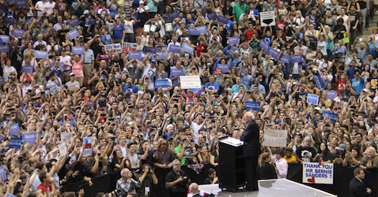

This is my personal website, talking about 2016 Democratic Presidential candidate, Bernie Sanders.
|
|
 |

People are very excited about Bernie, for a variety of reasons:
- His authenticity. He has been consistent in his positions over his many decades career in public service.
- His common sense positions on healthcare, education & overall sane budget priorities. He wants a thriving middle class and will implement policies to help the vast majority of non-billionaire Americans.
- His rejection of funding from PACs, SuperPACs, "Dark Money", Corporations, Lobbyists, etc.
- His support by more than 5 million individual contributions, averaging $27 per contribution.